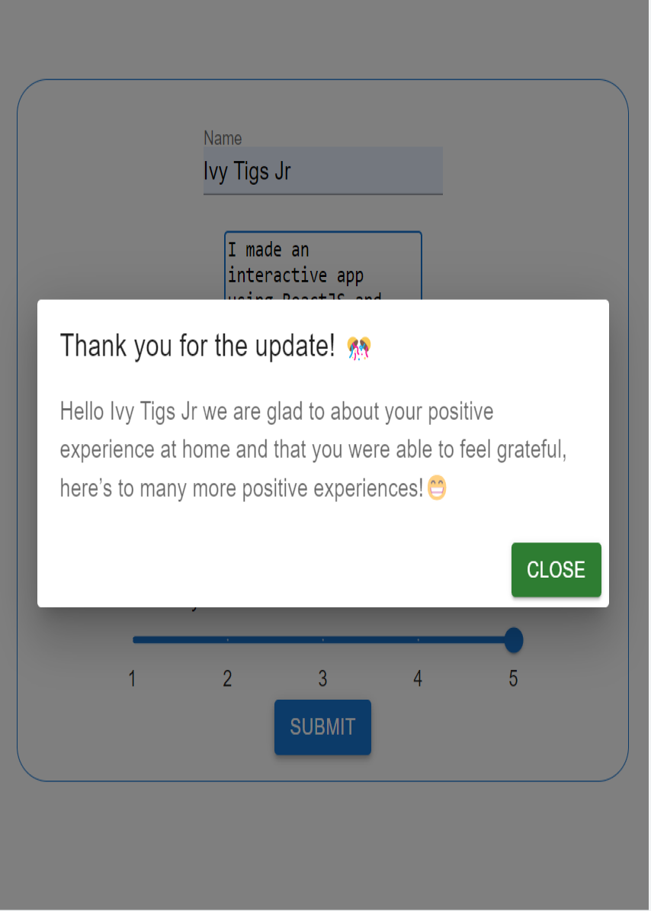

Vibe Check Survey
Dynamic React Survey

A dynamic survey application that inquires about and responds to a user's emotional vibration based on the user's input.
Problem to solve
Everybody experiences self-doubt, loneliness, and the need for validation from time to time.
Some people journal for this purpose and others don’t due to not feeling comfortable having a journal,
or even journaling in general.
Solution
This application allows users to quickly journal on the go, possibly without feeling self-conscious
about it as well, by offering a simple prompting survey to fill out that will allow them to easily
track their previous logs and continue on with their day after recieving a heart warming and
acknowledging message upon submission of their form.
Progress
This is an improvement to a previous static survey that I developed, now that I have
stronger programming skills I have decided to make this a dynamic application.
This is also an ongoing project, and I intend to add authentication with protected routed
for authorization, as well as a database that will allow the user to also save and log their
previous experiences to keep records of over time.
How to use
Fill in the input fields on the form and click the submit button,
this will display a modal that will respond to the information that you have just filled out.